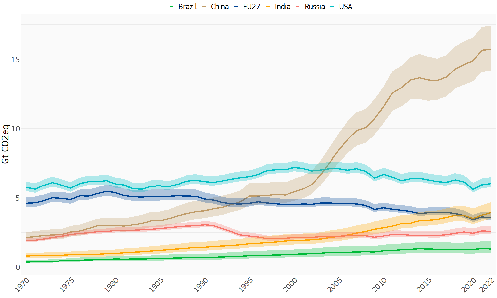
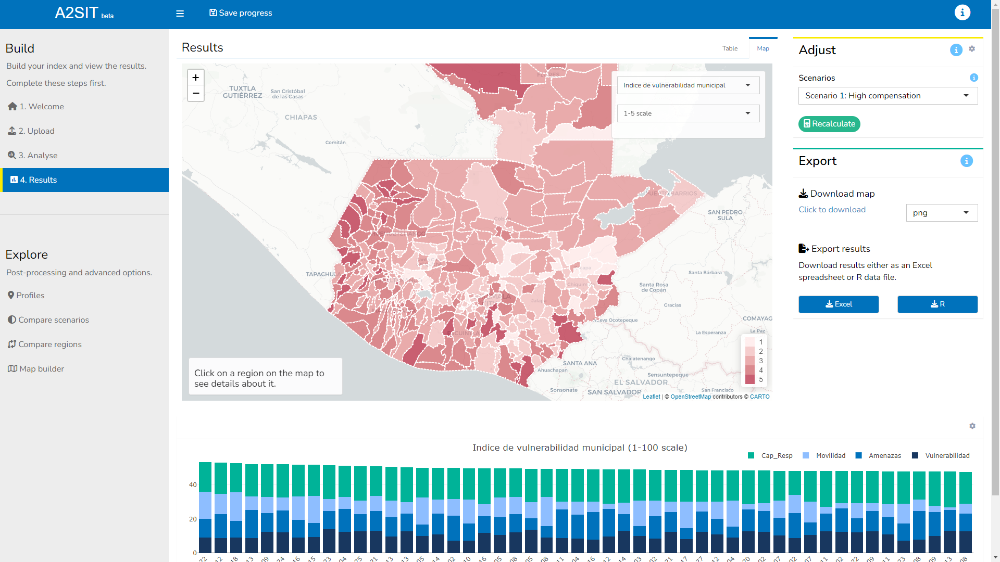
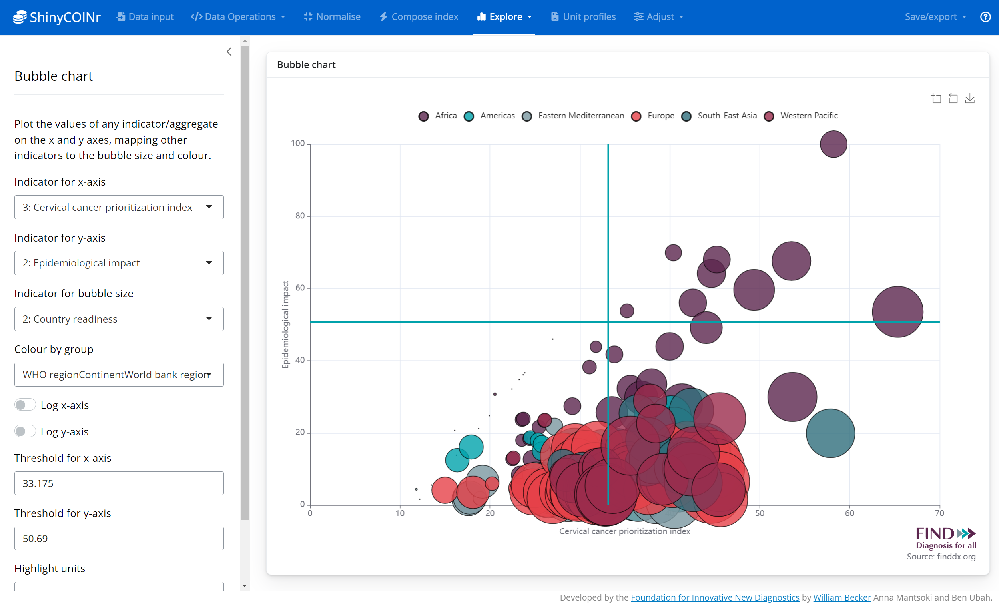

So it’s the end of 2023, I’ve closed all the big projects that needed closing before Christmas, and thought that a little summary of the year was in order.
2023 was a very busy but also very interesting year for me. As usual in freelance mode, things go up and down quite a lot: the start of the year was fairly manageable, June and July were crazy-busy, the summer was a nice break but I paid for that dearly in September until the end of November period in which a lot of big projects needed finishing at the same time and I nearly melted! Now at the end of December I’m feeling pretty relaxed and everything is fine. Which is why I finally have some time to write something here.
So, looking back on the year, here is how it went.
GHG Emissions Analysis
Things kicked off in early January when I started working half-time as a data scientist at the European Commission’s Joint Research Centre (JRC), in the EDGAR group which produces and manages a global database on greenhouse gas (GHG) emissions. Although I’d previously worked in the JRC for quite a few years, this was a completely new topic and it took me a while to find my feet and learn all about different GHG emissions, how they are estimated, and the technical ins and outs of the database. After this burn-in period however, and some sharpening my SQL skills, I managed to produce a custom R package and app which allows uncertainty estimation of GHG emissions across any sector, country, substance and time point. Here’s a little snapshot of the uncertainty estimations:

It looks quite straightforward but a lot of work went into it!
Anyway my JRC EDGAR work has been the stable half of my work for the whole of 2023 and I’m glad to say I will be continuing with the group well into 2024.
Community-based protection tool for UNHCR
Another big project that has run through 2023 is building the A2SIT app for UNHCR Guatemala. This started in January when I was contracted to begin work building the back-end code to build a composite indicator to understand which municipalities were most in need of community-based protection in Guatemala. The UNHCR team were in the process of collecting indicators and data, and I helped them build the composite indicator and the data pipeline to calculate index scores, using as usual the COINr package. At the end of the initial contract, I also floated the idea that I could build the front end of the app using Shiny, and this led to more work with them, and now I’m very proud to say the A2SIT app is deployed and has been presented to UNHCR offices in various countries as a general tool for measuring “severity”. I’m just wrapping up what will probably be my last contributions to the project as it is pretty much finished, but to give some highlights:
- The app is built in Shiny using Shinydashboardplus
- It takes a custom set of indicators and data uploaded in an Excel file
- It builds a composite indicator of severity, returning results and statistics
- Results are plotted on interactive maps
- Profiles are generated for all regions
- Users can upload their own shape files to build composite indicators for any set of regions or countries
- The app is fully documented in an online book

Read some more about the A2SIT app and project in a Medium article here.
A Composite Indicator App
Early in 2023 I began working with the Foundation for Innovative New Diagnostics (FIND) to build an app which can build composite indicators for any set of indicators and countries/regions/units. After much hard work through 2023 with a number of talented people, we have deployed a Shiny app which is being trialled within FIND to help prioritise resources to promote medical diagnosis in developing countries. The app should soon also be released as an open-source R package.

The app (working name “Composer”) is effectively an accessible front end for the COINr package, including options for imputation of missing data, outlier treatment, normalisation, aggregation and global sensitivity analysis, not to mention various visualisations in maps, bar and bubble charts. Hopefully some more news on the open source version soon!
Quality Infrastructure for Sustainable Development
Continuing my work with the United Nations Industrial Development Organisation (UNIDO), I began working on the update to the Quality Infrastructure for Sustainable Development (QI4SD) Index which I helped to create in 2020. The index, which has attracted some interest around the world and has been adopted by a number of countries as a national performance indicator, should have a full update in 2024.
To bring in as much expert feedback as possible for the update of the index, I worked with UNIDO colleagues to organise two expert workshops: one in Riyadh, Saudia Arabia; and the other in Vienna; in which we presented in detail the index methodology and discussed ways in which it can be improved.
The QI4SD Index should be released again in late 2024.
Global Innovation Index
In 2023 I continued an excellent collaboration with colleagues and friends in the World Intellectual Property Organisation (WIPO) working on the Global Innovation Index (GII). As part of an innovative team, I have helped redesign the back end of the GII, wrapping the modelling in a custom R package and contributing to documentation, data collection and auditing.
I’m always pround to be part of the GII, which remains one of the highest-quality composite indicators that I have been involved with (and I have worked on many!), from the data collection, processing and auditing, up to the exploration and messaging of the results.
European Skills Metrics
I was proud to be part of a winning consortium in a bid to update and maintain the European Skills Index (ESI) for Cedefop, a European agency which supports development of European vocational education and training policies and contributes to their implementation.
Working with the Fondazione Brodolini, an Italian consultancy, we have moved the calculation of the ESI to a fully-reproducible programmatic back end based around the COINr package. All data has now been collected and we expect to release the updated results in early 2024.
Other things
Even more things I worked on this year!
- I was commissioned to write a study by the European Commission on the prevalence of sensitivity analysis in impact assessments
- I ran the back-end modelling for the Water-Energy-Food Nexus Index, as I have done annually since 2019
- I audited the Vietnam Provincial Innovation Index, and was very pleased to meet the talented staff behind its creation near my home in Ispra, Italy!
- I made many further updates to the COINr package to which I have now made over 900 commits
Finally I’m pleased to say that I have become an associate consultant at Technopolis Group, a consultancy that works extensively in European policy in Brussels (and also with many offices worldwide). Very happy to be on board and to be working on projects in the new future!
And so…
And so. This has been a really busy but very rewarding year. Although I have been through some very busy periods I’ve had my time off and overall I think it has balanced out quite nicely.
I’m extremely happy to have worked on so many interesting projects, with so many inspiring people. Here’s to another good year in 2024!